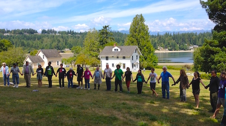
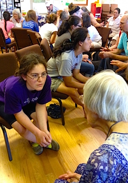
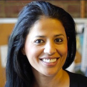

Friends,
Nestled along the Hood Canal with sweeping views of the Olympic Mountains, there is a place where FOR families and friends meet each year to appreciate the land and each other and envision ways to make the "beloved community" a reality on Earth.

Seabeck Conference Center in Washington has been the home of the annual FOR NW Regional Conference for 57 years. Held on the first weekend in July, it is always a wonderful intergenerational, family-friendly retreat featuring dynamic speakers, workshops, art, music, healthy food and fun for all ages. Next year will be super special so mark your calendars now as Seabeck 2016 is the grand culmination of FOR-USA's Centennial Celebrations that begin in New York City in November 2015.
FOR-USA, Oregon FOR and Western Washington FOR invite you to join us to Persevere for Peace together at the Centennial National Conference at Seabeck!
I've been attending FOR Seabeck since 1996. For 20 years I've learned something new to deepen my comprehension of nonviolence. I've learned about events around the world and met the people working to make them better, long before they hit mainstream news. I've met inspirational people, created lifelong friendships, and laughed at the talent show. And every year there has been a special kind of joy and hope generated there that is inspired by the wisdom passed back and forth through the mingling of the ages.
My daughter Julia Selker, who has been attending Seabeck since she was a toddler, says, "Seabeck lets me share the perspective of people who have worked on activism for longer than I've been alive, and who help me look towards the future with ideals, optimism, and strategies."
Kaeley Pruitt-Hamm, another young adult who has been coming to the annual summer conference since early childhood, concurs: "Seabeck has served as a consistent reminder throughout my life that we as a species can evolve towards creative and constructive ways of resolving conflict and interacting with our planet. As a newer visitor on this earth, it has been inspiring to do intergenerational work together with other Fellowship of Reconciliation community members. Because of Seabeck, FOR became more than an organization. It was a community and a lifestyle and a whole identity."
While we celebrate our 100 year history, we are looking toward the future to realize our shared vision of a peaceful and sustainable home planet and particularly want youth and young adults to participate in the 2016 conference. Our goal is to provide scholarship assistance to support participation. There are also plans for shared plenary and workshop offerings and opportunities for individual peace fellowship gatherings as well as the capacity to house peace fellowship groups together in dedicated housing on the Seabeck campus.
Our dynamic nationally renowned keynote speakers, Jamila Raqib and Erica Chenoweth, will surely hearten and embolden young adults and folks of all ages to continue the work.
Jamila is the Executive Director of the Albert Einstein Institution since 2005 and a Research Affiliate of the Center for International Studies at Massachusetts Institute of Technology (MIT). She works closely with Dr. Gene Sharp, the world's foremost scholar on strategic nonviolent action.
Watch Jamila's TEDxSF talk.
Erica is an internationally recognized authority on political violence and its alternatives. Her path-breaking research on the effectiveness of nonviolent resistance has earned her numerous distinctions for "proving Gandhi right."
Watch Erica's TED Talk.
Living and promoting the way of nonviolence in a violent world is hard work, so we vitally need to support one another in retreat to refresh and reinvigorate ourselves for that work.
As Tibaria Alnouri, a young adult who came to her first Seabeck Conference last year, tells us:
"Witnessing a community bound together by a spirit for justice and change really did the trick for me. I had my doubts regarding peace being bombarded with stories of conflict and violence everywhere, but Seabeck showed me that didn't have to be the case. Seabeck was a manifestation of a world I use to only dream of. I got to take a peek into what the world could be should we choose to act on our convictions. I've chosen to act on my convictions; I believe harmony is a true reality not an idealistic utopia; it's only a matter of time (and a bunch of hard work)."
Please mark your calendars now and plan to be refreshed to persevere for peace into the future at the Seabeck Centennial National Conference in 2016!
For more information about Seabeck 2016, please see the website and Facebook page.
For more information on all of FOR-USA's Centennial Celebrations, please see the website and these facebook pages: Centennial Dinner, Centennial Exhibit, Centennial Reception & Silent Auction, and Wine & Cheese Reception and Short Film.
I hope to see you in New York and in Washington!
In peace,
Laurie Childers
FOR-USA National Council Chair
Photos from Seabeck courtesy of Laurie Childers |